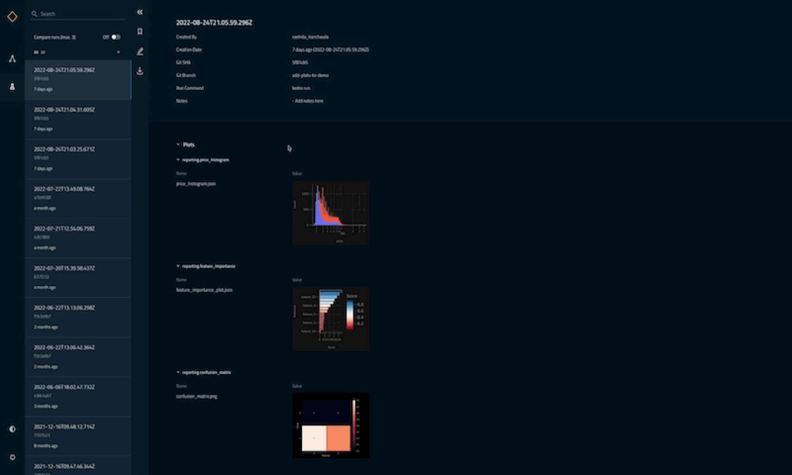
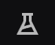
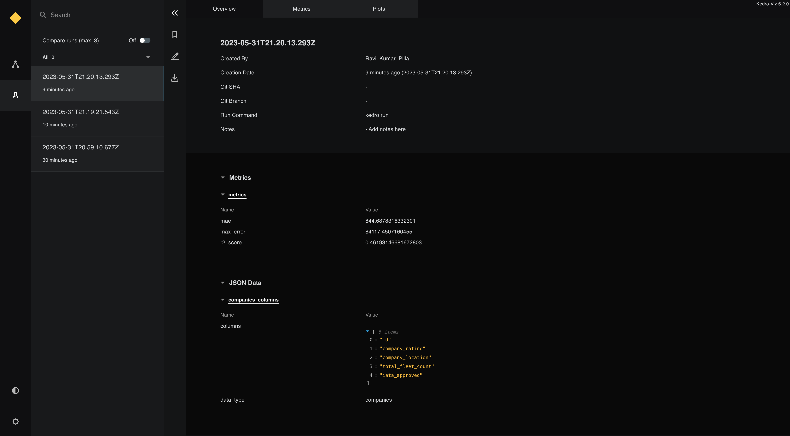
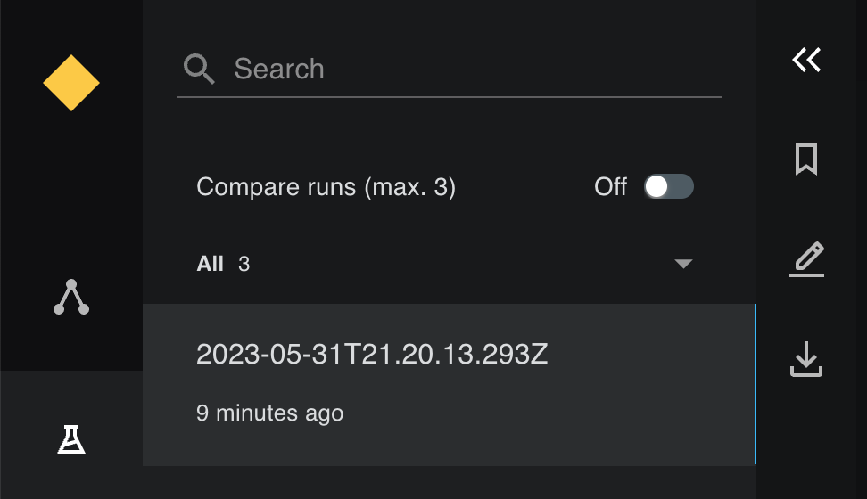
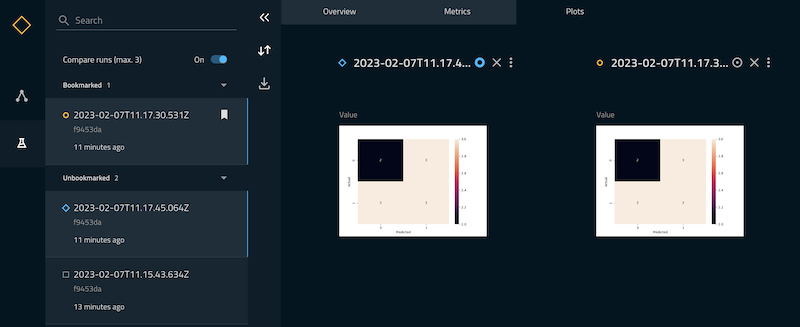
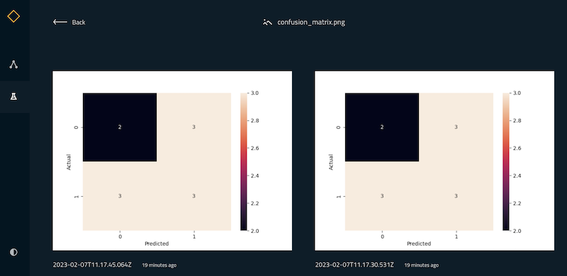
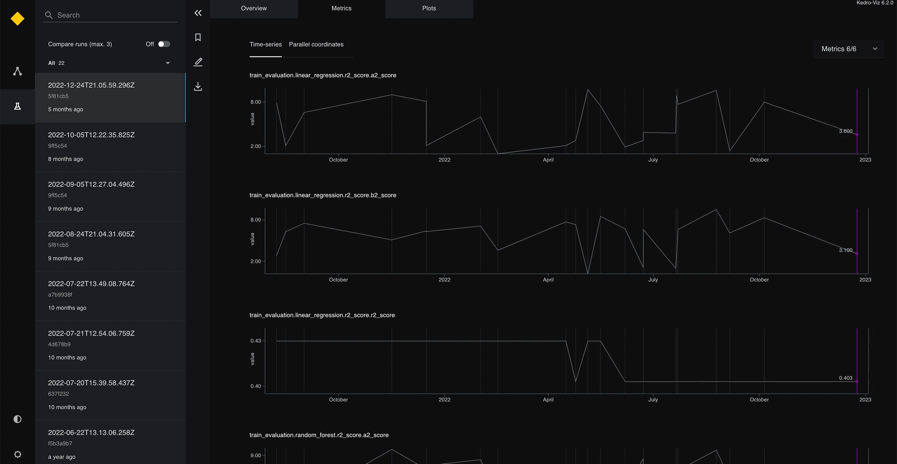
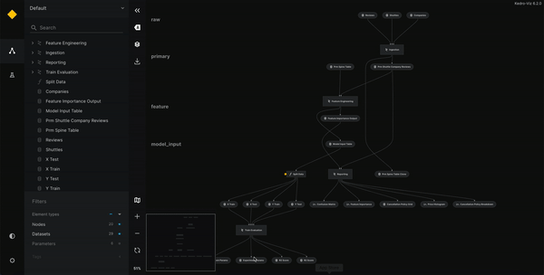

Experiment tracking in Kedro-Viz¶
Experiment tracking is the process of saving all the metadata related to an experiment each time you run it. It enables you to compare different runs of a machine-learning model as part of the experimentation process.
The metadata you store may include:
Scripts used for running the experiment
Environment configuration files
Versions of the data used for training and evaluation
Evaluation metrics
Model weights
Plots and other visualisations
Kedro versions supporting experiment tracking¶
Kedro has always supported parameter versioning (as part of your codebase with a version control system like git) and Kedro’s dataset versioning capabilities enabled you to snapshot models, datasets and plots.
Kedro-Viz version 4.1.1 introduced metadata capture, visualisation, discovery and comparison, enabling you to access, edit and compare your experiments and additionally track how your metrics change over time.
Kedro-Viz version 5.0 also supports the display and comparison of plots, such as Plotly and Matplotlib. Support for metric plots (timeseries and parellel coords) was added to Kedro-Viz version 5.2.1.
Experiment tracking demonstration using Kedro-Viz¶
We have made an experiment tracking demo to enable you to explore the capabilities of Kedro-Viz further.

When should I use experiment tracking in Kedro?¶
The choice of experiment tracking tool depends on your use case and choice of complementary tools, such as MLflow and Neptune:
Kedro - If you need experiment tracking, are looking for improved metrics visualisation and want a lightweight tool to work alongside existing functionality in Kedro. Kedro does not support a model registry.
MLflow - You can combine MLFlow with Kedro by using
kedro-mlflowif you require experiment tracking, model registry and/or model serving capabilities or have access to Managed MLflow within the Databricks ecosystem.Neptune - If you require experiment tracking and model registry functionality, improved visualisation of metrics and support for collaborative data science, you may consider
kedro-neptunefor your workflow.
Set up a project¶
This section describes the steps necessary to set up experiment tracking and access logged metrics, using the spaceflights tutorial with a version of Kedro equal to or higher than 0.18.4, and a version of Kedro-Viz equal to or higher than 5.2.
There are three steps to enable experiment tracking features with Kedro-Viz. We illustrate how to:
Install Kedro and Kedro-Viz¶
To use this tutorial code, you must already have installed Kedro and Kedro-Viz. You can confirm the versions you have installed by running kedro info
Note
The example code uses a version of Kedro-Viz >=5.2.1.
Create a new project using the spaceflights starter. From the terminal run:
kedro new --starter=spaceflights
Feel free to name your project as you like, but this guide assumes the project is named Kedro Experiment Tracking Tutorial.
Install the dependencies for the project¶
Once you have created the project, to run project-specific Kedro commands, you must navigate to the directory in which it has been created:
cd kedro-experiment-tracking-tutorial
Install the project’s dependencies:
pip install -r src/requirements.txt
Set up the session store¶
In the domain of experiment tracking, each pipeline run is considered a session. A session store records all related metadata for each pipeline run, from logged metrics to other run-related data such as timestamp, git username and branch. The session store is a SQLite database that is generated during your first pipeline run after it has been set up in your project.
To set up the session store, go to the src/kedro-experiment-tracking-tutorial/settings.py file and add the following:
from kedro_viz.integrations.kedro.sqlite_store import SQLiteStore
from pathlib import Path
SESSION_STORE_CLASS = SQLiteStore
SESSION_STORE_ARGS = {"path": str(Path(__file__).parents[2] / "data")}
This specifies the creation of the SQLiteStore under the data/ subfolder, using the SQLiteStore setup from your installed Kedro-Viz plugin.
This step is crucial to enable experiment tracking features on Kedro-Viz, as it is the database used to serve all run data to the Kedro-Viz front-end. Once this step is complete, you can either proceed to set up the tracking datasets or set up your nodes and pipelines to log metrics; these two activities are interchangeable, but both should be completed to get a working experiment tracking setup.
Note
Please ensure that your installed version of Kedro-Viz is >=5.2.1.
Set up experiment tracking datasets¶
There are two types of tracking datasets: tracking.MetricsDataSet and tracking.JSONDataSet. The tracking.MetricsDataSet should be used for tracking numerical metrics, and the tracking.JSONDataSet can be used for tracking any other JSON-compatible data like boolean or text-based data.
Set up two datasets to log the columns used in the companies dataset (companies_columns) and experiment metrics for the data science pipeline (metrics) like the coefficient of determination (r2 score), max error (me) and mean absolute error (mae) by adding the following in the conf/base/catalog.yml file:
metrics:
type: tracking.MetricsDataSet
filepath: data/09_tracking/metrics.json
companies_columns:
type: tracking.JSONDataSet
filepath: data/09_tracking/companies_columns.json
Modify your nodes and pipelines to log metrics¶
Now that you have set up the tracking datasets to log experiment tracking data, next ensure that the data is returned from your nodes.
Set up the data to be logged for the metrics dataset - under nodes.py of your data_science pipeline (src/kedro-experiment-tracking-tutorial/pipelines/data_science/nodes.py), add three different metrics to your evaluate_model function to log r2_score, mae and me and return these 3 metrics as key-value pairs.
The new evaluate_model function should look like this:
from sklearn.metrics import mean_absolute_error, max_error
def evaluate_model(
regressor: LinearRegression, X_test: pd.DataFrame, y_test: pd.Series
) -> Dict[str, float]:
"""Calculates and logs the coefficient of determination.
Args:
regressor: Trained model.
X_test: Testing data of independent features.
y_test: Testing data for price.
"""
y_pred = regressor.predict(X_test)
score = r2_score(y_test, y_pred)
mae = mean_absolute_error(y_test, y_pred)
me = max_error(y_test, y_pred)
logger = logging.getLogger(__name__)
logger.info("Model has a coefficient R^2 of %.3f on test data.", score)
return {"r2_score": score, "mae": mae, "max_error": me}
Next, ensure that the dataset is also specified as an output of your evaluate_model node. In the src/kedro-experiment-tracking-tutorial/pipelines/data_science/pipeline.py file, specify the output of your evaluate_model to be the metrics dataset. Note that the output dataset must exactly match the name of the tracking dataset specified in the catalog file.
The node of the evaluate_model on the pipeline should look like this:
node(
func=evaluate_model,
inputs=["regressor", "X_test", "y_test"],
name="evaluate_model_node",
outputs="metrics",
)
Repeat the same steps to set up the companies_column dataset. For this dataset, log the column that contains the list of companies as outlined in the companies.csv file under the data/01_raw directory. Modify the preprocess_companies node under the data_processing pipeline (src/kedro-experiment-tracking-tutorial/pipelines/data_processing/nodes.py) to return the data under a key-value pair, as shown below:
from typing import Tuple, Dict
def preprocess_companies(companies: pd.DataFrame) -> Tuple[pd.DataFrame, Dict]:
"""Preprocesses the data for companies.
Args:
companies: Raw data.
Returns:
Preprocessed data, with `company_rating` converted to a float and
`iata_approved` converted to boolean.
"""
companies["iata_approved"] = _is_true(companies["iata_approved"])
companies["company_rating"] = _parse_percentage(companies["company_rating"])
return companies, {"columns": companies.columns.tolist(), "data_type": "companies"}
Again, you must ensure that the dataset is also specified as an output on the pipeline.py file under the data_processing pipeline (src/kedro-experiment-tracking-tutorial/pipelines/data_processing/pipeline.py), as follows:
node(
func=preprocess_companies,
inputs="companies",
outputs=["preprocessed_companies", "companies_columns"],
name="preprocess_companies_node",
)
Having set up both datasets, you can now generate your first set of experiment tracking data!
Generate the run data¶
The beauty of native experiment tracking in Kedro is that all tracked data is generated and stored each time you do a Kedro run. Hence, to generate the data, you need only execute:
kedro run
After the run completes, under data/09_tracking, you can now see two folders, companies_column.json and metrics.json. On performing a pipeline run after setting up the tracking datasets, Kedro generates a folder with the dataset name for each tracked dataset. Each folder of the tracked dataset contains folders named by the timestamp of each pipeline run to store the saved metrics of the dataset, and each future pipeline run generates a new timestamp folder with the JSON file of the saved metrics under the folder of its subsequent tracked dataset.
You can also see the session_store.db generated from your first pipeline run after enabling experiment tracking, which is used to store all the generated run metadata, alongside the tracking dataset, to be used for exposing experiment tracking to Kedro-Viz.

Execute kedro run a few times in a row to generate a larger set of experiment data. You can also play around with setting up different tracking datasets, and check the logged data via the generated JSON data files.
Access run data and compare runs¶
Here comes the fun part of accessing your run data on Kedro-Viz. Having generated some run data, execute the following command:
kedro viz
When you open the Kedro-Viz web app, you see an experiment tracking icon on the left-hand side of the screen.

Click the icon to go to the experiment tracking page (you can also access the page from your browser at http://127.0.0.1:4141/experiment-tracking), where you can see the sets of experiment data generated from all previous runs:

You can now access, compare and pin your runs by toggling the Compare runs button:

View and compare plots¶
In this section, we illustrate how to compare Matplotlib plots across experimental runs (functionality available since Kedro-Viz version 5.0).
Update the dependencies¶
Update the src/requirements.txt file in your Kedro project by adding the following dataset to enable Matplotlib for your project:
kedro-datasets[matplotlib.MatplotlibWriter]~=1.0.0
seaborn~=0.12.1
And install the requirements with:
pip install -r src/requirements.txt
Add a plotting node¶
Add a new node to the data_processing nodes (src/kedro-experiment-tracking-tutorial/pipelines/data_processing/nodes.py):
import matplotlib.pyplot as plt
import seaborn as sn
def create_confusion_matrix(companies: pd.DataFrame):
actuals = [0, 1, 0, 0, 1, 1, 1, 0, 1, 0, 1]
predicted = [1, 1, 0, 1, 0, 1, 0, 0, 0, 1, 1]
data = {"y_Actual": actuals, "y_Predicted": predicted}
df = pd.DataFrame(data, columns=["y_Actual", "y_Predicted"])
confusion_matrix = pd.crosstab(
df["y_Actual"], df["y_Predicted"], rownames=["Actual"], colnames=["Predicted"]
)
sn.heatmap(confusion_matrix, annot=True)
return plt
And now add this node to the data_processing pipeline (src/kedro-experiment-tracking-tutorial/pipelines/data_processing/pipeline.py):
from .nodes import create_confusion_matrix
node(
func=create_confusion_matrix,
inputs="companies",
outputs="confusion_matrix",
),
In the catalog (conf/base/catalog.yml) add the confusion_matrix data definition, making sure to set the versioned flag to true within the project catalog to include the plot in experiment tracking:
confusion_matrix:
type: matplotlib.MatplotlibWriter
filepath: data/09_tracking/confusion_matrix.png
versioned: true
After running the pipeline with kedro run, the plot is saved and you can see it in the experiment tracking panel when you execute kedro viz. Clicking on a plot expands it. When in comparison view, expanding a plot shows all the plots in that view for side-by-side comparison.


View and compare metrics data¶
From Kedro-Viz >=5.2.1 experiment tracking also supports the display and comparison of metrics data through two chart types: time series and parallel coordinates.
Time series displays one metric per graph, showing how the metric value has changed over time.
Parallel coordinates displays all metrics on a single graph, with each vertical line representing one metric with its own scale. The metric values are positioned along those vertical lines and connected across each axis.
When in comparison view, comparing runs highlights your selections on the respective chart types, improving readability even in the event there is a multitude of data points.
Note
The following graphic is taken from the Kedro-Viz experiment tracking demo (it is not a visualisation from the example code you created above).

Additionally, you can monitor the changes to metrics over time from the pipeline visualisation tab which you can access by following the icon on the left-hand side of the screen.
Clicking on any MetricsDataset node opens a side panel displaying how the metric value has changed over time:
